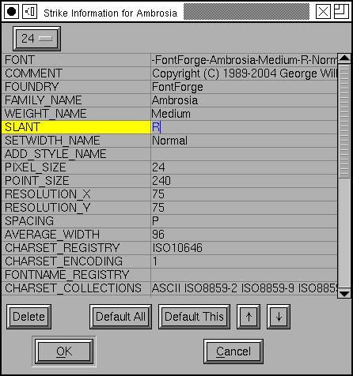

BDF Info Dialog¶
If your font contains bitmaps you may want control over the BDF Properties associated with those bitmaps. Each pixel size (bitmap strike) has its own set of properties.
The X11 consortium has defined certain conventional properties and defines their meaning in the X Long Font Descriptor specification.
When you first create a bitmap strike (with Element->Bitmaps Available) it will have no properties associated with it. If you then generate a bdf file based on that FontForge will give you some default properties.
You may view these default properties in this dialog by pressing the
[Default All] button – this will remove any current properties (except for
RESOLUTION_Y) and replace them with the defaults that
FontForge calculates).
You may select any property and press the [Default This] button to find its
default value (There are some properties that FontForge cannot default, you’ll
have to figure these out yourself).
You may use the [Delete] button to remove a property.
You may use the up and down arrows buttons to move the selected property up or down in the list (as far as I know, there is no functional reason for doing this, but if your esthetics prefer a different ordering you may enforce it).
To change a property name depress the mouse on it. You should get a list of all standard properties. At the bottom of the property list is a special line labeled “New…”, clicking on it brings up the same popup menu and allows you to create a new property.
To change the value of a property, click in the value field and type in the new version.
To select a property without bringing up the popup menu or the editing field, click on the extreme left of the property.
The one essential property that FontForge can’t always guess correctly is the
resolution (in particular RESOLUTION_Y). When you press [Default All]
FontForge will retain the current value of this property and base the others on
it.